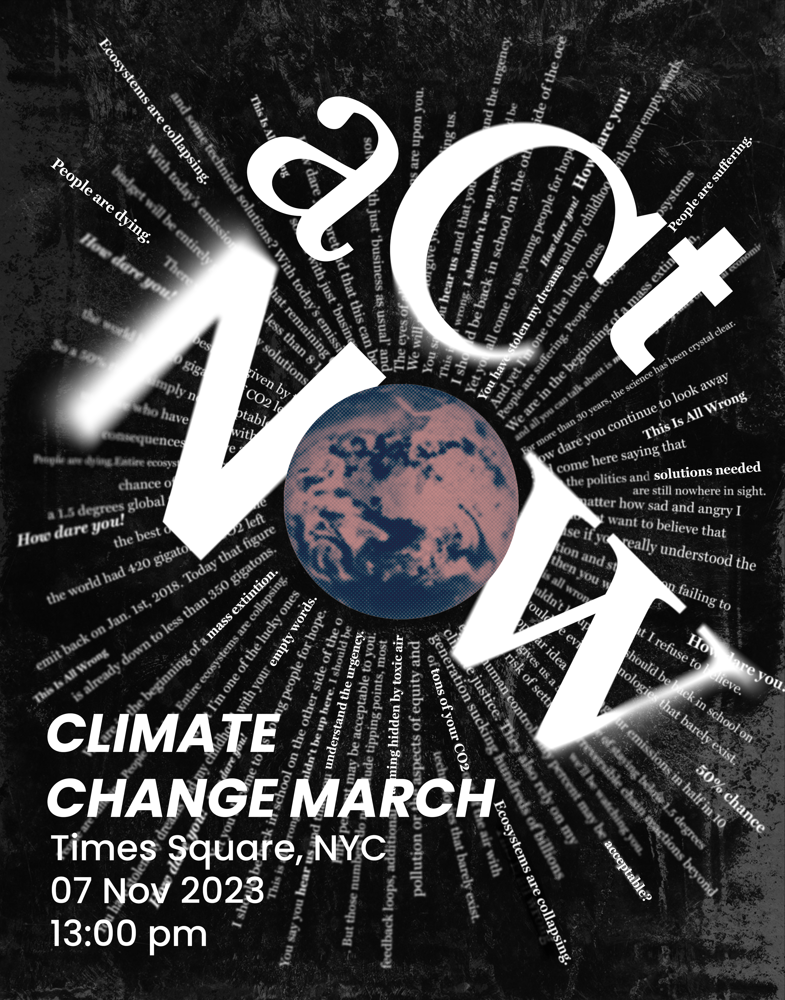
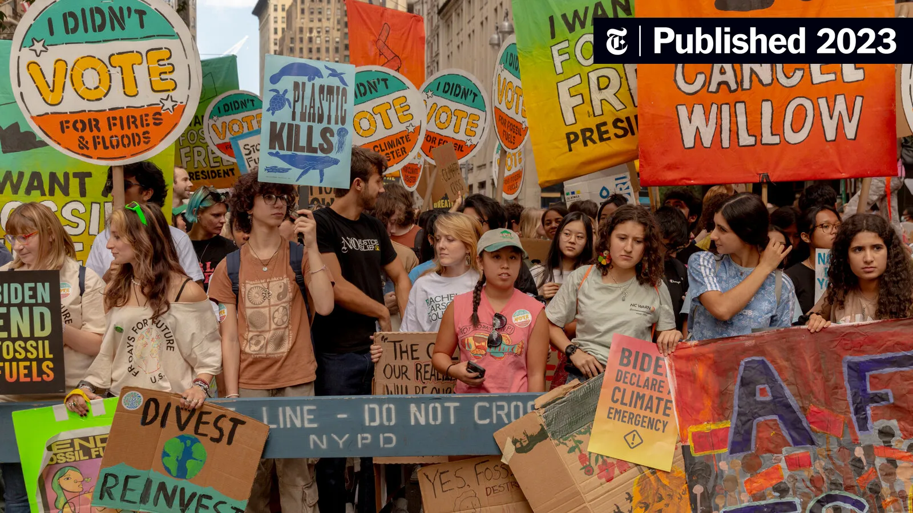
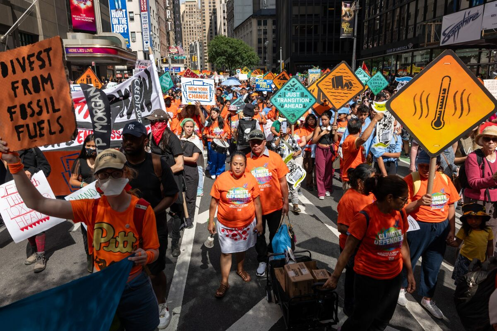
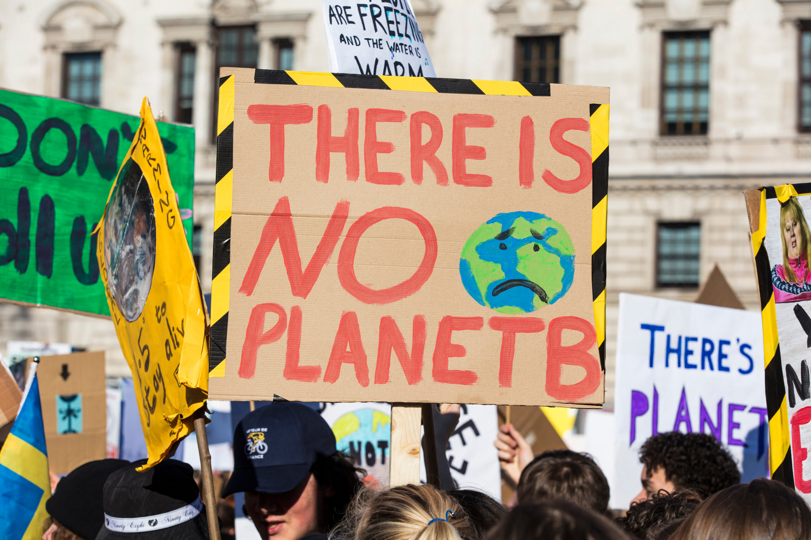

How dare you continue to look away while ecosystems collapse?
The climate crisis is no longer a distant threat — it is here. Rising temperatures, extreme weather, collapsing ecosystems, and mass extinctions are already underway. Scientists warn we have a rapidly closing window to limit warming to 1.5°C, yet global emissions continue to rise. Entire communities face displacement, food insecurity, and loss of livelihoods. Young people inherit a planet in crisis while decision-makers delay meaningful action. This is not just an environmental issue; it is a matter of justice, equity, and survival. The time for empty promises is over. We must demand immediate, systemic change before tipping points make recovery impossible.
Climate Change March
Times Square, NYC
07 November 2026 · 1:00pm


